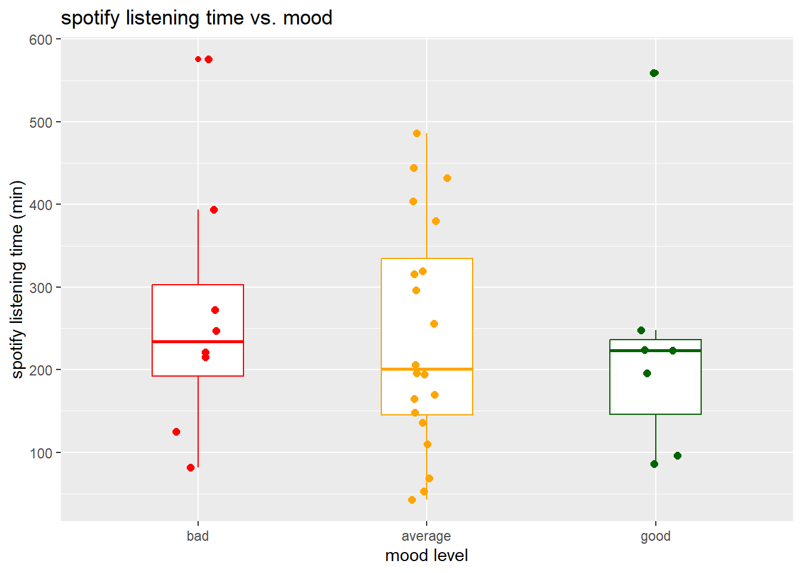
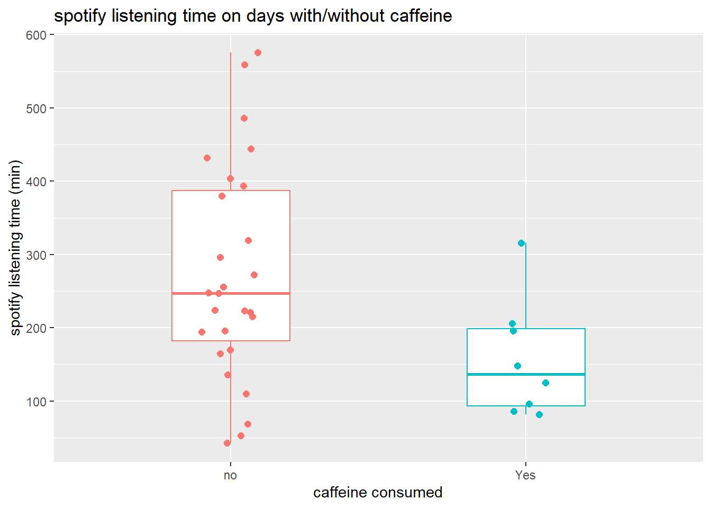
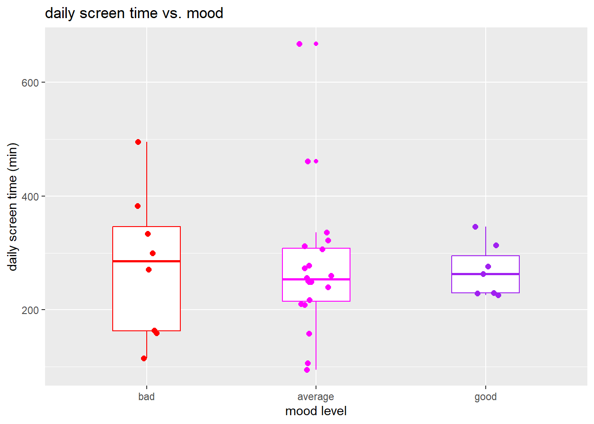
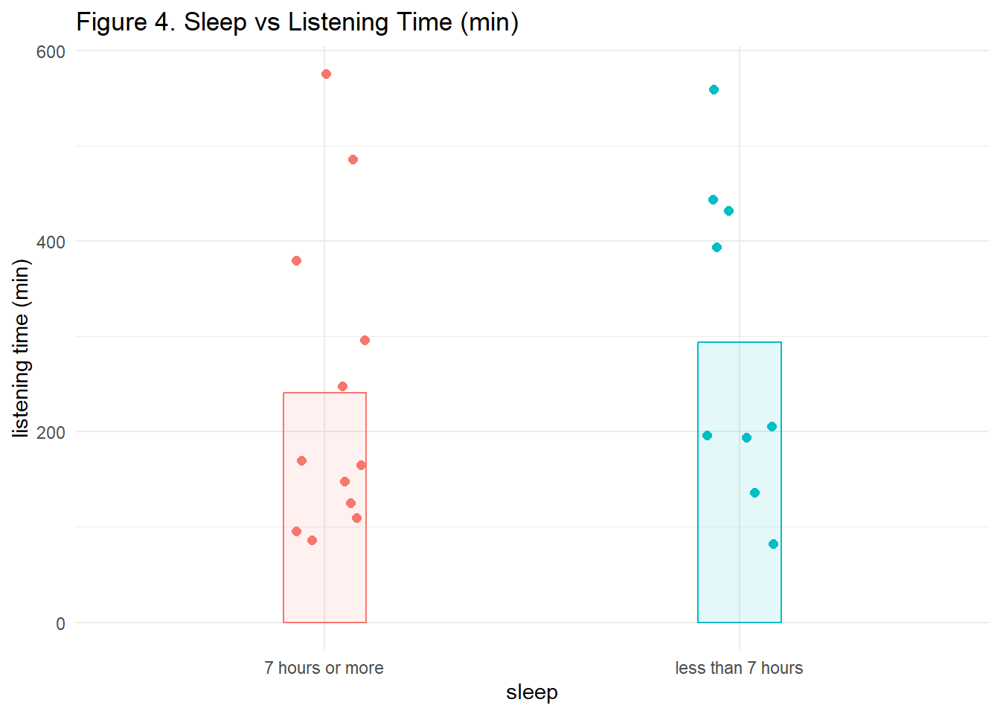
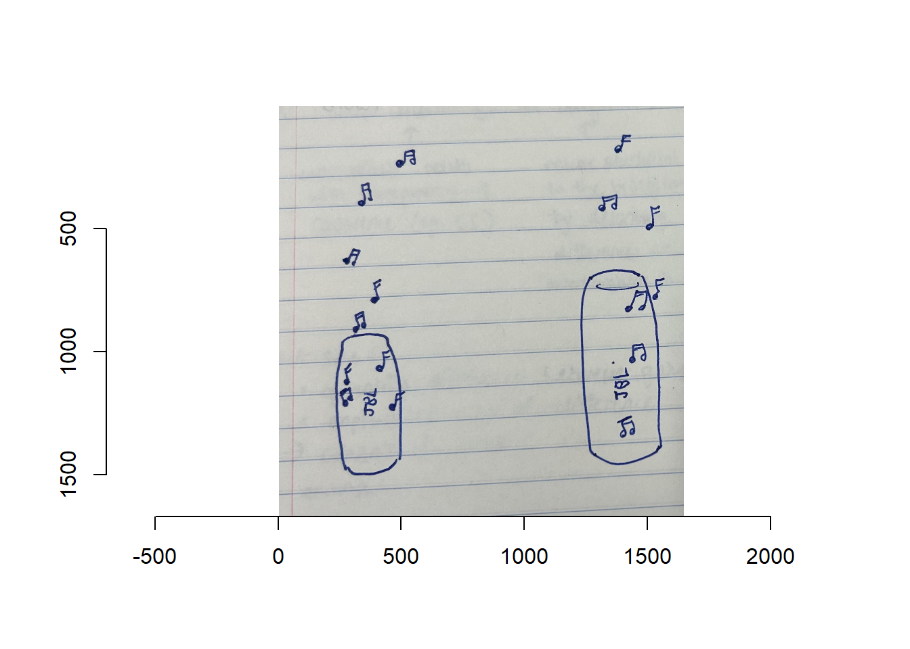
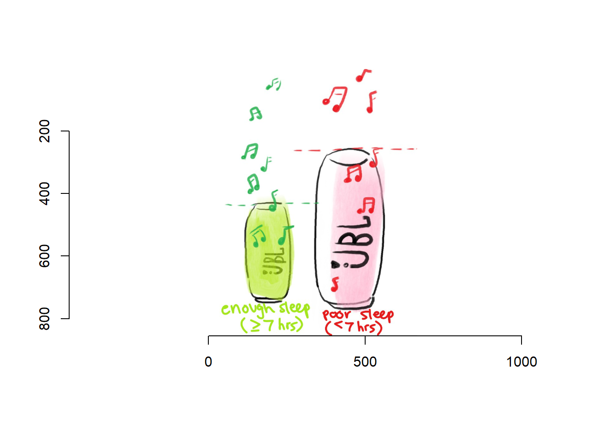

library(tidyverse) #general use
library(here) #file organization
library(gt) #visualizing table
library(janitor) #cleaning dataframes
library(readxl) #reading excel files
library(dplyr) #provides grammar for data manipulation
library(imager)#helps with providing imagesENVS-193DS_homework-03
https://github.com/emilyl-2324/ENVS-193DS_homework-03.git
Problem 1:
a. Data summarizing (5 points)
In 1-2 sentences, describe how you could summarize your data to compare your response variable between categories or groups of your choosing. For example, are you counting observations and comparing counts between groups? Are you taking the mean and comparing means between groups? Are you finding the maximum, minimum, range? Are you adding numbers together?
Be sure to describe why comparing between the groups you chose is informative. For example, you might calculate the mean number of steps you take to compare between week days, but what about those weekdays is different (e.g. “I could calculate the mean number of steps I took to compare average step count between weekdays because I have more classes on Monday than on any other day of the week, so I think I walk more on Monday.”)
I could calculate the mean spotify listening time to the hours of sleep I receive since on days when I’m more tired, I think I have less impulse control and would be more likely to get instant gratification from listening to music. I will find and compare the average listening time on days with <7 hours of sleep and on days with 7 hours or more of sleep.
b. Visualization (10 points):
Using the summary you described in part a, create a visualization of your data comparing your summarized response variable between groups. If you are calculating a mean or median, show the underlying data in addition to your summary.
Use colors in your figure (that are not the default ggplot settings).
Make sure your axis labels are full, readable text (not just your column names).
#Figure 1. mood vs. spotify listening time
datasheet <- read_csv("envs193dsmusicdata.csv") #create object from csvRows: 35 Columns: 6
── Column specification ────────────────────────────────────────────────────────
Delimiter: ","
chr (2): dates, caffeine
dbl (4): mood level, spotify time, total screen time, sleep
ℹ Use `spec()` to retrieve the full column specification for this data.
ℹ Specify the column types or set `show_col_types = FALSE` to quiet this message.cleandata <- datasheet |> #storing clean df as an object "cleandata"
clean_names() |> #clean column names
mutate(mood_level = case_when( #edit numeric values into words
mood_level == 2 ~ "bad",
mood_level == 3 ~ "average",
mood_level == 4 ~ "good")) |>
mutate(mood_level = factor(mood_level, levels = c("bad", "average", "good"))) |> # set order here
mutate(caffeine = replace_na(caffeine, "no")) #replace NA with "no" in caffeine column
ggplot(data = cleandata, #using the cleandata dataframe
aes(x = mood_level, #plots mood levels on the x-axis and listening time on the y-axis
y = spotify_time,
color = mood_level)) + #assigning color of the data based on mood
geom_boxplot(width = 0.4) + # first layer should be a boxplot
geom_jitter(size = 1.9, #create jitter plot
width = 0.1, # making the points jitter horizontally
height = 0) + # making sure points don't jitter vertically
labs( #add titles
x = "mood level",
y = "spotify listening time (min)",
title = "spotify listening time vs. mood") +
scale_color_manual( #assign colors to each mood_level
values = c( "bad" = "red",
"average" = "orange",
"good" = "darkgreen")
) +
theme(legend.position = "none") # getting rid of the legend
#Figure 2. create a plot showing caffeine consumption (yes/no) on x-axis and listening time (min) on y-axis
ggplot(data = cleandata, #using cleandata dataframe for plot, assign color depending on whether caffeine was consumed.
aes(x = caffeine,
y = spotify_time,
color = caffeine)) +
geom_boxplot(width = 0.4) + #adding boxplot layer
geom_jitter(size = 1.9, #adding scatterplot layer
width = 0.1,
height = 0) +
labs(x = "caffeine consumed", #adding lables
y = "spotify listening time (min)",
title = "spotify listening time on days with/without caffeine") +
theme(legend.position = "none") #remove legend
#Figure 3. create a scatterplot with screen time (min) on x-axis and spotify listening time (min) on y-axis
ggplot(data = cleandata, #use cleandata dataframe
aes(x = total_screen_time,
y = spotify_time)) +
geom_jitter(size = 1.7, # adds scatterplot layer
width = 0.1) +
labs(x = "screen time", #adds label
y = "spotify listening time",
title = "spotify listening time and screen time")
#Figure 4. create a scatterplot with mood on x-axis and screen time on y-axix
ggplot(data = cleandata, #using the cleandata dataframe
aes(x = mood_level, #plots mood levels on the x-axis and listening time on the y-axis
y = total_screen_time,
color = mood_level)) + #assigning color of the data based on mood
geom_boxplot(width = 0.4) + # first layer should be a boxplot
geom_jitter(size = 1.9,
width = 0.1, # making the points jitter horizontally
height = 0) + # making sure points don't jitter vertically
labs( #add titles
x = "mood level",
y = "daily screen time (min)",
title = "daily screen time vs. mood") +
scale_color_manual( #assign colors to each mood_level
values = c( "bad" = "red",
"average" = "magenta",
"good" = "purple")
) +
theme(legend.position = "none") # getting rid of the legend
#Table 1. create a gt table showing sleep and average spotify listening time
cleansleep <- cleandata |>
filter(sleep > 0)
music_sleep <- cleansleep |> #creating new object that categorizes any sleep observation to either greater than or less than 7 hours.
clean_names() |>
mutate(sleep = case_when(
sleep < 7 ~ "less than 7 hours",
sleep >= 7 ~ "7 hours or more"
))
sleep_summary <- music_sleep |> #new object, creating a table grouped by sleep and includes mean listening time.
group_by(sleep) |>
summarize(mean = mean(spotify_time)) |>
mutate(mean = round(mean, 1)) |>
select(sleep, mean)
sleep_summary |> #plots the table using sleep_summary dataframe
gt() |>
cols_label( #renaming columns
sleep = "sleep",
mean = "average spotify time"
)| sleep | average spotify time |
|---|---|
| 7 hours or more | 240.5 |
| less than 7 hours | 293.7 |
#Figure 5. create a plot showing spotify listening time vs sleep (>7 and <7 on x-axis, listening time on y-axis)
ggplot(data = music_sleep, #uses music_sleep dataframe
aes(x = sleep,
y = spotify_time,
color = sleep)) +
#geom_boxplot(width = 0.4,
#alpha = 0.5) + # first layer should be a boxplot
geom_jitter(size = 1.9,
width = 0.1, # making the points jitter horizontally
height = 0) + # making sure points don't jitter vertically
geom_col(data = sleep_summary, #use sleep_summary dataframe to plot mean as a column
aes(x = sleep,
y = mean,
fill = sleep),
width = 0.2,
alpha = 0.1)+
labs( #add titles
x = "sleep",
y = "listening time (min)",
title = "Figure 4. Sleep vs Listening Time (min)")+
theme_minimal()+
theme(legend.position = "none") #remove legend
c. Caption (5 points):
Write a caption for your figure.
Figure 4. Figure depicts relationship between sleep time (categorized as either less than 7 hours or 7 hours or greater) and spotify listening time in minutes. Each point represents listening time in minutes. Red points represents sleep time of 7 hours or more while blue represents sleep of less than 7 hours. The bar shows the average listening time for each sleep time category, depicting a greater average listening time for days that had 7 or more hours of sleep.
d. Table presentation (10 points) Using gt or flextable, create a table with the same data summary that you describe in part a and visualized in part b. For example, if you described and visualized means, make a table with means. If you need to, round any numbers to one decimal point.
#table 1. sleep and average listening time
music_sleep <- cleansleep |> #creating new object that categorizes sleep data into two categories (greater than or less than 7 hours)
clean_names() |>
mutate(sleep = case_when(
sleep < 7 ~ "less than 7 hours",
sleep >= 7 ~ "7 hours or more"
))
sleep_summary <- music_sleep |> #new object to create a table, grouped by sleep categories and shows mean listening time per category
group_by(sleep) |>
summarize(mean = mean(spotify_time)) |>
mutate(mean = round(mean, 1)) |>
select(sleep, mean)
sleep_summary |> #display table
gt() |>
cols_label( #renaming columns
sleep = "sleep",
mean = "average spotify time (min)")| sleep | average spotify time (min) |
|---|---|
| 7 hours or more | 240.5 |
| less than 7 hours | 293.7 |
Problem #2:
a. Describe in words what an affective visualization could look like for your personal data (3-5 sentences). (2 points)
The visualization depicts JBL speakers, which represent columns referring to the average listening time for the two categoies of sleep time (>=7 hours, <7 hours). The music clefs represent underlying data points, where each clef is one observation.
b. Create a sketch (on paper) of your idea. (2 points)
im = load.image("envs-193dsphoto3.jpg") #function loads image
plot(im)
c. Make a draft of your visualization. (12 points)
im = load.image("envs-193dsphoto2.jpg")#function loads image
plot(im)
d. Write an artist statement. (8 points)
An artist statement gives the audience context to understand your work. For each of the following points, write 1-2 sentences to address:
the content of your piece (what are you showing?) The piece includes JBL speakers, which represent columns referring to the average listening time for the two categories of sleep time (>=7 hours, <7 hours). The music clefs represent underlying data points, where each clef is one observation.
the influences (what did techniques/artists/etc. did you find influential in creating your work?) I wanted to make sure the art wasn’t too abstract, so that the viewer could still understand what the visual is depicting. The JBL is a pretty common everyday object and I thought it would be relevant since the corresponding ggplot shows the relationship between music listening time and sleep.
the form of your work (written code, watercolor, oil painting, etc.) your process (how did you create your work?) I sketched the visual on paper. I later did a digital version to make it more polished.
Problem 3. Statistical critique (36 points)
a. Revisit and summarize (6 points)
The study used a t-test, where the response variable was gene expression levels and the predictor variable was whether patients had PTSD or not. The t-test addressed the question of whether patients with or without PTSD had a statistically different result in gene expression levels. A significant difference in the gene expression levels would suggest that the difference is not due to random chance and that patients with PTSD can have different gene expression levels for certain genes compared to patients without PTSD.
b. Visual clarity (10 points)
If you inserted a table in Part b: How clearly does the table represent the data underlying tests?
The table has 5 columns showing microarray results, including the gene name, the gene account number, P-value (from rank product), p-value (from t-test), and p-value (from wilcoxon’s test). This table doesn’t represent data the best in terms of spread or distribution, which can be changed by including standard deviation or variance. For example, the table can include the mean cortisol levels +/- standard deviation for PTSD patiences and non-PTSD patients. Based on the table alone, you also cannot tell how large the sample size is for the experimental or control group since it doesn’t list the number of samples or trials for each gene.
c. Aesthetic clarity (10 points)
If you inserted a table in Part b: How well did the authors handle “visual clutter”? Is there any bolding/italic text to draw your eye to specific numbers? The table is single spaced and there are around 20 genes, so the values are packed in tight rows but there are spaces between columns showing the p-values from different statistical tests. There aren’t any bolded values numerically but genes are groups into two categories: regulated and unregulated, which the title categories are italicized. Visually, the table could be improved by providing a guideline or alternating backdrop colors to make searching for p-values easier.
d. Recommendations (can be longer than 4 sentences, 10 points)
What recommendations would you make to make the figure or table better? What would you take out, add, or change? Provide explanations/justifications for each of your recommendations.
To improve the data table in terms of helping better represent the underlying data, I would include other statistical elements, such as standard deviation. Standard deviation would show spread of the data, specifically the spread of cortisol levels between PTSD patients and non-PTSD patiences. Without standard deviation, you cannot tell whether the mean represents clustered data or data with a large spread. Sample size should also be added for each gene to show reliability of the data - in general, the more trials there are, the more reliable the data will be. Currently, the only statistical element the data table shows is the p-value, which suggests whether to reject the null hypothesis (that there is no statistical difference in cortisol levels between people with/without PTSD) or not. Adding standard deviation and sample size can show spread of underlying data and reliability.